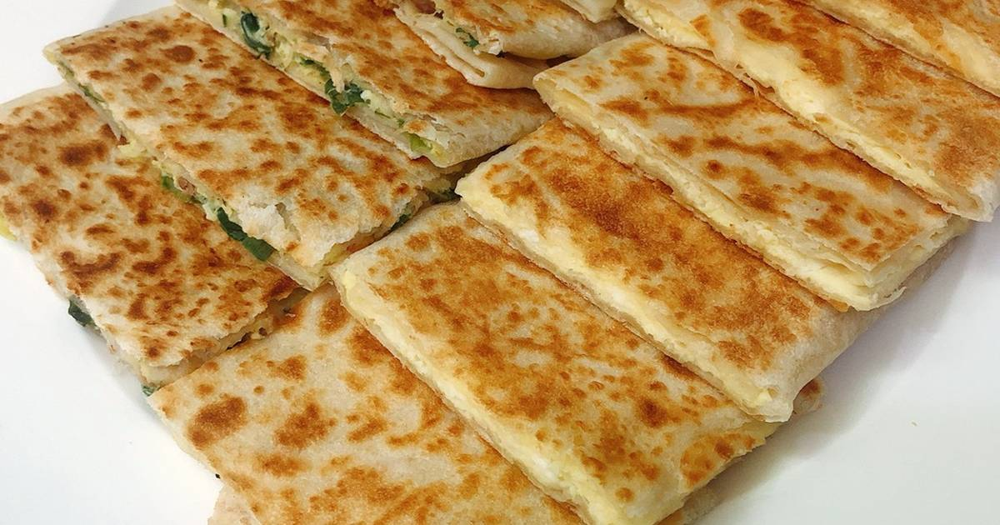
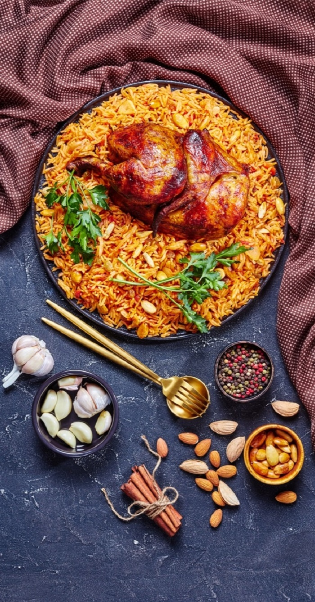
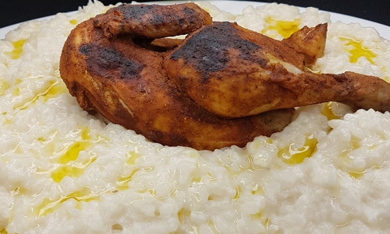
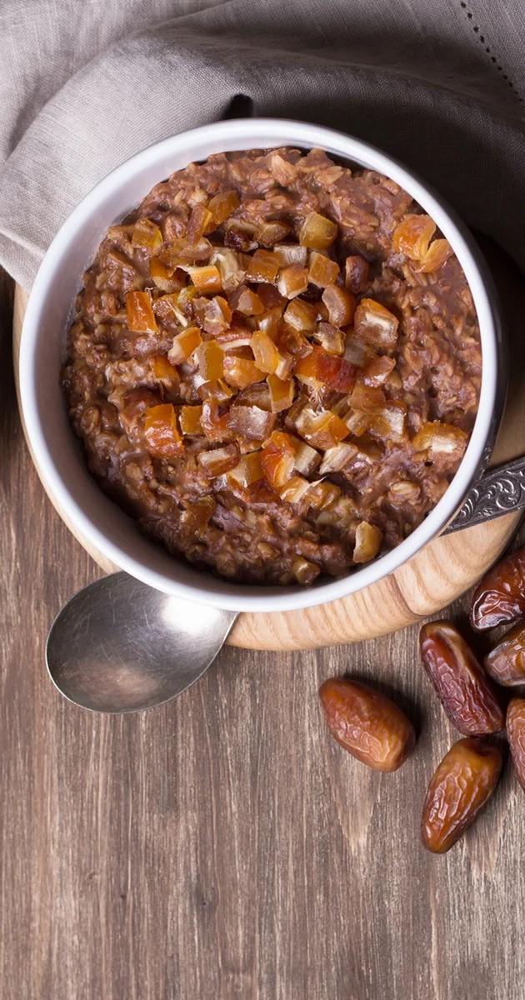

Mutabbaq
The Arabic name ‘Mutabbaq’ literally means folded. And that’s exactly what this street food is – a folded, fried pancake stuffed with a lightly spiced mixture of minced meat, eggs, tomatoes and onions.
Kabsa
This traditional dish is a wholesome combination of rice mixed with meat, vegetables, potatoes, flavoured with spices like black pepper, cloves, cardamom, saffron, black lime, bay leaves and nutmeg. Considered as the national dish of Saudi Arabia, Kabsa is an intrinsic part of the region’s culinary heritage.
Saleeg
Saleeg is a delicate white rice based dish cooked with broth and milk. It is usually served with a chilli tomato sauce called ‘duggus’ along with pickled lemons. Saleeg is had as a winter comfort dish.